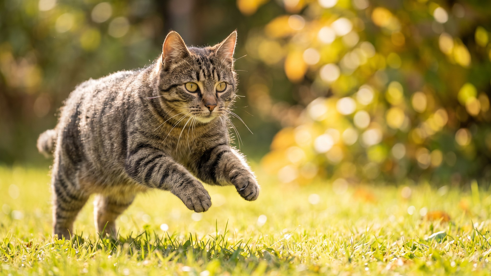

Стоит взять телефон, и кошка тут же садится на руки. Завели второго питомца, и она испортила любимую куртку. Хозяева обычно говорят «вредничает». На деле кошка не ревнует как человек. Она борется за ресурс: ваше внимание, место, доступ к вам. Вот шесть сигналов, которые об этом говорят, и что стоит сделать.
🐾 У вашей кошки так же?
Расскажите в AnimaLife, как ведёт себя ваш питомец, — приложение объяснит причину и даст пошаговый план. Бесплатно, без записи к специалисту.
Разобрать свой случай → Разобрать в MAX →
У вас iPhone? AnimaLife есть в App Store
Кошки не испытывают ревности как сложной социальной эмоции. Зато они очень хорошо считывают изменения в своём окружении и реагируют на конкуренцию за то, что им важно. Три основных ресурса: ваше внимание, комфортная территория, предсказуемость распорядка.
Когда что-то угрожает доступу к этим ресурсам, кошка начинает действовать. Способы разные, но хозяева часто принимают их за вредность, а не за сообщение.
Наказание не поможет. Кошка не понимает, за что её наказывают, зато уровень стресса растёт, а поведение усиливается.
Материал носит информационный характер и не заменяет очную консультацию ветеринара.
🐾 Хотите понять, что кошка говорит вам?
Опишите ситуацию или пришлите видео в AnimaLife — AI разберёт поведение вашего питомца и подскажет, что делать. Бесплатно, ответ за минуту.
Разобрать поведение → Разобрать в MAX →
У вас iPhone? AnimaLife есть в App Store
🐾 Понравился разбор?
Подпишитесь на канал — каждый день разбираем по одному тревожному симптому у кошек и собак: что в пределах нормы, а когда пора к врачу. Подпишитесь, чтобы не пропустить разбор, который может спасти здоровье вашего питомца.